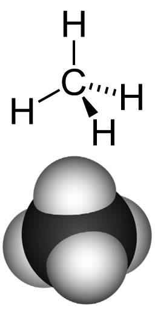

– knowledge statements and learning goals

| Chapter 4: Heterogenous compounds: 3D realties & 2D representations – knowledge statements and learning goals |
|
Building on carbon Up until this point we have considered only bonds between atoms of the same element. While this makes things simpler (although you might not agree after thinking about the many forms of carbon), it leaves out the vast majority of the compounds that exist in the world and their chemistries. Moreover, pure elements are rare in nature. Much of the efforts of alchemists, early chemists, and the modern refining industry involve determining how to (economically) separate specific types of atoms (elements) away from others. Modern chemistry is concerned (largely) with putting atoms together to form new and useful molecules. Both involve understanding the concepts underlying how atoms interact. To extend our discussion to the wider world of what we might call “heterogenous” molecules, that is, molecules made up of atoms of more than one element, we will begin with carbon. |
|
Why carbon? Well here are some reasons. Carbon (3,032 atoms per million) is the fourth most abundant element in the universe, after hydrogen (705,700 atoms per million), helium (275,200 atoms per million) and oxygen (5,920 atoms per million). Carbon is distinguished from most other elements in its ability to form a vast array of diverse compounds - bonding with itself and other elements. It turns out that those bonds are “just right”, not too strong and not too weak. Under the conditions that persist on the surface of the Earth, carbon compounds are stable enough to hang around, but not stable enough to persist forever – they are not “dead ends”. Carbon is a key building block of the major molecules of life: proteins, nucleic acids, lipids, and carbohydrates. We are carbon-based life forms! Carbon compounds are also widely used in a wide range of synthetic materials, such as pharmaceuticals, polymers, high-tech materials, and we waste a lot of carbon compounds by burning them for fuel. Carbon: always tetravalent and often tetrahedral Atoms combine in many different ways; we have already seen an example of how a covalent bond can form between two hydrogen atoms, producing molecular (H2), as opposed to the atomic form of hydrogen. Similarly atoms of carbon can be linked together in various ways to form diamond, graphite, and graphene. Now we move on to molecules involving atoms of carbon and other elements. In keeping with our on-going attempt to keep things simple (or better put, as simple as possible), let us start by examining the types of molecules that can be formed by combining carbon with hydrogen - there are many such molecules: collectively they are known as hydrocarbons. The simplest such compound is methane CH4 - a major component of natural gas. As in all its compounds, and its elemental forms, carbon forms four bonds. We will now consider in greater detail why this is so, what forms the bonds can take, and what are the consequences of this fact. In this discussion, we will be building on the ideas introduced when we talked about diamond, graphite, and graphene. To answer these questions we need to return to the ideas developed in chapter 2 about the quantization of electron energy levels. Carbon has a total of six electrons, two of which are in a filled (1s) quantum shell, and four valence electrons - it is these electrons that can take part in bonding. Remember that the formation of a bond always lowers the energy of a system. It therefore makes sense that a carbon atom would form as many bonds as possible, resulting in the most stable possible molecule species. |
Question to answer:
Questions to ponder:
|
What happens if we combine hydrogen with carbon, do we get a compound with properties intermediate between the two? Absolutely not (as you might have expected when considering the differences between diamonds and graphite). As previously, we use the hybridization model to explain the behaviors we observe. We begin with what we know - in methane the carbon atoms make four bonds, one to each of four hydrogen atoms, and we know (from experiments) that the shape of the methane molecule has the carbon at the center and the four C–H bonds pointing towards the corners of a four sided figure (a tetrahedron). |
Recall that we say the hybridization of carbon is sp3 and the arrangement of the bonds is tetrahedral, that is, the angle between orbitals (and the C-H bonds) is 109.5º. Another way to say this is that the H-C-H bond angle is 109.5º. We can predict that this will be the case based based on theoretical calculations; these have been confirmed by experimental observations. But why should this be true? How many different arrangements are there for four hydrogens bonded to a single carbon? Why aren’t the Hs all arranged in a single plane (around a central C with 90º bond angles) rather than in the tetrahedral arrangement? The planar arrangement, which is known as a square planar geometry, is possible and is actually observed under some special conditions (and in molecules involving transition metals - as we will see later). The square planar arrangement is not as stable as the tetrahedral arrangement because each C-H bond (molecular orbital) can be considered as a region of high electron (negative charge) density. Given that like repels like, each bond will repel the others, and will move as far away from the other bonds as possible. The optimum bond angle turns out to be 109º away from each of their neighbors. At that point, if they were to move further away from one orbital they would have moved closer to another. You may want to convince yourself of this geometric fact by using a marshmallow, toothpicks and gumdrops! This principle goes by the unwieldy name of Valence Shell Electron Pair Repulsion (VSEPR) and can be used to predict (once you get the hang of it) the three-dimensional (3D) structure of simple molecules – assuming that you know how the atoms within a molecule are connected. For example, using VSEPR logic, you should be able to present a compelling argument for why the C-H bonds in methane do not adopt a square planar orientation, as well as the general shape of many other types of molecules. |
If we were able to see a methane molecule, what we observe would probably be closest to the electrostatic potential map. This is a visualization of the molecular orbitals - and amounts to a picture of the surface of the molecule, generally color coded to represent fluctuations in electron density. |
One strategy to address this problem is through what are known as perspective formulae. In a perspective formula the atoms are represented by their atomic symbols (e.g. C or H) and bonds are represented by various kinds of lines. A normal line is meant to indicate a bond that is in the plane of the paper, a wedged line represents a bond that is coming out of the plane toward you (from left to right), and a hatched line represents a bond that is coming out of the plane, but away from you (the reader)(from right to left). This convention makes it easier to draw 3D perspective structures by hand without specialized software (or graphical talent.) We can, in fact, can go one step further and draw methane without indicating its 3D structure at all: both Lewis structures (shown at left) and CH4 are examples of this approach. Lewis structures and molecular formulae represent a chemical shorthand that can provide a huge amount of information and we will see even more extreme examples as we go on. However, to be able to understand these representations, you must already know that the methane molecule is tetrahedral or the rules that apply to the geometry of carbon bonds, since neither is shown explicitly. If you didn’t know these things, you might even be tempted to assume that methane is organized with a square planar geometry or that the Hs are all located to one side of the C atom (neither of which are true!) |
 |
Why, you might ask would, one want to draw structures with so much information missing. Perhaps, like medieval alchemists, modern chemists want to keep their secrets from the “average person.” Perhaps they just like secret codes and mystical symbols. Or perhaps it is because these shorthand representations of molecules are just much more compact and easy to draw, particularly when we get to large molecules with lots of atoms. Structures that show all the bonds, atoms, and any valence electrons that are not in bonds, but do not attempt to accurately represent the 3D shape of a molecule are called Lewis structures. Drawing Lewis structures is an important and useful chemistry skill - which we will return to in more detail shortly. Once you have mastered it, you will be able to look at a molecular formula such as CH4 (or C5H12) and (together with other information) be able to visualize the 3D structure of the molecule represented and predict many of the substances physical and chemical properties. |
One strategy to address this problem is through what are known as perspective formulae. In a perspective formula the atoms are represented by their atomic symbols (e.g. C or H) and bonds are represented by various kinds of lines. A normal line is meant to indicate a bond that is in the plane of the paper, a wedged line represents a bond that is coming out of the plane toward you (from left to right), and a hatched line represents a bond that is coming out of the plane, but away from you (the reader)(from right to left). This convention makes it easier to draw 3D perspective structures by hand without specialized software (or graphical talent.) We can, in fact, can go one step further and draw methane without indicating its 3D structure at all: both Lewis structures (shown at left) and CH4 are examples of this approach. Lewis structures and molecular formulae represent a chemical shorthand that can provide a huge amount of information and we will see even more extreme examples as we go on. However, to be able to understand these representations, you must already know that the methane molecule is tetrahedral or the rules that apply to the geometry of carbon bonds, since neither is shown explicitly. If you didn’t know these things, you might even be tempted to assume that methane is organized with a square planar geometry or that the Hs are all located to one side of the C atom (neither of which are true!) |
|
The process of removing hydrogens and adding methyl groups can continue, essentially without limit, to generate a family of hydrocarbons known as the alkanes; the rules that govern these molecules are simple – each H makes one and only one bond, each C must make four discrete bonds and these bonds are tetrahedral in orientation. The number of carbons is in theory unlimited and how they are linked together determines the number of hydrogens (can you see how two hydrocarbons with the same number of C atoms could have different numbers of Hs?). Depending upon how the carbons are connected, it is possible to generate a wide variety of molecules with dramatically different shapes. For example there are cage-like, spherical, and long, string-like alkanes. Consider the 4 carbon alkanes. There are butane and isobutane that have the formula C4H10, (as well as others with 4 carbons but different numbers of hydrogens, for example: cyclobutane, methylcyclopropane and tetrahedrane). |
Butane has a boiling point of -0.5ºC, and isobutane has a boiling point of -11.7 ºC. Why are the boiling points of butane and isobutane, which have the same atomic composition (C4H10), different? The answer lies in the fact that they have different shapes. |
 |
| The roughly linear carbon chain of butane has a larger surface area than isobutane, which gives it more surface area through which to interact with other ?molecules (via London dispersion forces). This idea, that the shape of a molecule, as well as its constituent atoms, combines to determine the properties of the compound, is one that we will return to repeatedly. | 4.1 Heterogeneous compounds 4.2 Single bonds 4.3 Double & triple bonds 4.4 N, O, & F 4.5 Molecular Shape 4.6 Ionic bonding |
Question to answer:
Questions to ponder:
|
| 27-Jun-2012 |